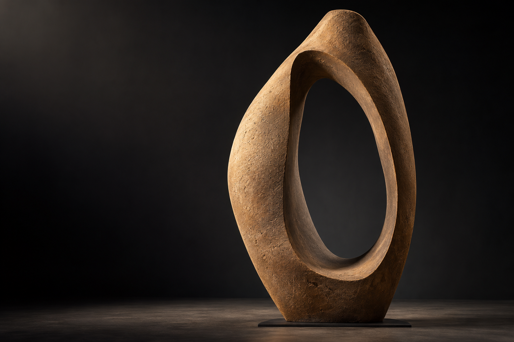

先把名字，暂时放下。
沿着器形的外缘，从开口缓慢移向底部。哪些地方收紧，哪些地方放开？轮廓不是一条装饰线，它安排了器物与周围空间相遇的方式。
试着这样看
只看明暗交界，不急着判断它像什么。找出一处最让你想停留的转折。

一件器形，三种观看。
从一条轮廓，到一处留白。
光穿过没有被填满的地方，
把空间也留在形状之中。
三站不是知识测试。试着改变注意的对象，再回到同一件器形，看看它是否有了不同的样子。
三次观察，同一件器形。
当前：第一站 / 看轮廓
沿着器形的外缘，从开口缓慢移向底部。哪些地方收紧，哪些地方放开？轮廓不是一条装饰线，它安排了器物与周围空间相遇的方式。
只看明暗交界，不急着判断它像什么。找出一处最让你想停留的转折。
观物是一场原创概念展览。器形影像由 AI 生成，文字与导览用于探索形体、光与空间的关系，不作为真实文物、工艺考据或现场摄影。你可以从轮廓走入留白，再回到表面的细节。